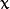

Table Of Contents
Previous topic
Introduction to SURF (Speeded-Up Robust Features)

Introduction to SURF (Speeded-Up Robust Features)
We saw several feature detectors and many of them are really good. But when looking from a real-time application point of view, they are not fast enough. One best example would be SLAM (Simultaneous Localization and Mapping) mobile robot which have limited computational resources.
As a solution to this, FAST (Features from Accelerated Segment Test) algorithm was proposed by Edward Rosten and Tom Drummond in their paper “Machine learning for high-speed corner detection” in 2006 (Later revised it in 2010). A basic summary of the algorithm is presented below. Refer original paper for more details (All the images are taken from original paper).
Select a pixel  in the image which is to be identified as an interest point or not. Let its intensity be .
in the image which is to be identified as an interest point or not. Let its intensity be .
Select appropriate threshold value  .
.
Consider a circle of 16 pixels around the pixel under test. (See the image below)
Now the pixel is a corner if there exists a set of  contiguous pixels in the circle (of 16 pixels) which are all brighter than , or all darker than . (Shown as white dash lines in the above image). was chosen to be 12.
contiguous pixels in the circle (of 16 pixels) which are all brighter than , or all darker than . (Shown as white dash lines in the above image). was chosen to be 12.
A high-speed test was proposed to exclude a large number of non-corners. This test examines only the four pixels at 1, 9, 5 and 13 (First 1 and 9 are tested if they are too brighter or darker. If so, then checks 5 and 13). If is a corner, then at least three of these must all be brighter than or darker than . If neither of these is the case, then cannot be a corner. The full segment test criterion can then be applied to the passed candidates by examining all pixels in the circle. This detector in itself exhibits high performance, but there are several weaknesses:
- It does not reject as many candidates for n < 12.
- The choice of pixels is not optimal because its efficiency depends on ordering of the questions and distribution of corner appearances.
- Results of high-speed tests are thrown away.
- Multiple features are detected adjacent to one another.
First 3 points are addressed with a machine learning approach. Last one is addressed using non-maximal suppression.
Select a set of images for training (preferably from the target application domain)
Run FAST algorithm in every images to find feature points.
For every feature point, store the 16 pixels around it as a vector. Do it for all the images to get feature vector .
Each pixel (say ) in these 16 pixels can have one of the following three states:
Depending on these states, the feature vector is subdivided into 3 subsets, , , .
Define a new boolean variable, , which is true if is a corner and false otherwise.
Use the ID3 algorithm (decision tree classifier) to query each subset using the variable for the knowledge about the true class. It selects the which yields the most information about whether the candidate pixel is a corner, measured by the entropy of .
This is recursively applied to all the subsets until its entropy is zero.
The decision tree so created is used for fast detection in other images.
Detecting multiple interest points in adjacent locations is another problem. It is solved by using Non-maximum Suppression.
and 16 surrounding pixels values.It is several times faster than other existing corner detectors.
But it is not robust to high levels of noise. It is dependant on a threshold.
It is called as any other feature detector in OpenCV. If you want, you can specify the threshold, whether non-maximum suppression to be applied or not, the neighborhood to be used etc.
For the neighborhood, three flags are defined, cv2.FAST_FEATURE_DETECTOR_TYPE_5_8, cv2.FAST_FEATURE_DETECTOR_TYPE_7_12 and cv2.FAST_FEATURE_DETECTOR_TYPE_9_16. Below is a simple code on how to detect and draw the FAST feature points.
import numpy as np
import cv2
from matplotlib import pyplot as plt
img = cv2.imread('simple.jpg',0)
# Initiate FAST object with default values
fast = cv2.FastFeatureDetector()
# find and draw the keypoints
kp = fast.detect(img,None)
img2 = cv2.drawKeypoints(img, kp, color=(255,0,0))
# Print all default params
print "Threshold: ", fast.getInt('threshold')
print "nonmaxSuppression: ", fast.getBool('nonmaxSuppression')
print "neighborhood: ", fast.getInt('type')
print "Total Keypoints with nonmaxSuppression: ", len(kp)
cv2.imwrite('fast_true.png',img2)
# Disable nonmaxSuppression
fast.setBool('nonmaxSuppression',0)
kp = fast.detect(img,None)
print "Total Keypoints without nonmaxSuppression: ", len(kp)
img3 = cv2.drawKeypoints(img, kp, color=(255,0,0))
cv2.imwrite('fast_false.png',img3)
See the results. First image shows FAST with nonmaxSuppression and second one without nonmaxSuppression: